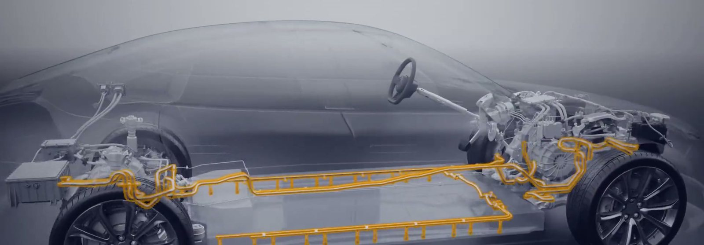

neuwerk
Turning Expertise
into Impact
Built on decades of engineering excellence and driven by the ambition to create lasting value for customers, partners and industries worldwide, in the automotive industry.
Who we are
Built on Expertise.
Driven by Progress.
Continental OES neuwerk
neuwerk combines engineering excellence, industrial expertise and trusted customer relationships with a clear ambition for the future.
Origin
The company originates from Continental’s former Original Equipment Solutions business area and builds on decades of automotive expertise, long-standing customer partnerships and deep industrial capabilities. As an independent global company with approximately 14,000 employees in 16 countries, we continuously evolve to create greater value for our customers, employees and partners.
Capability
Our strength lies in combining system understanding, engineering know-how, multi-material expertise and industrial execution to transform complex challenges into reliable, scalable solutions. From concept development and simulation to industrialization and serial production, we help customers turn ideas into reality.
Focus
Automotive remains our foundation and will continue to be at the heart of our business. At the same time, we see attractive opportunities where our unique combination of engineering expertise, material know-how, and industrial execution can help solve complex challenges and deliver reliable, scalable solutions.

Global footprint
Combining global capabilities
with local customer proximity
Delivering solutions where they are needed most.

Placeholder Location markers are indicative.
- 14,000
- people
- 16
- countries
- One
- company
Solutions
Engineering Solutions
That Create Value
Every day, our technologies help improve reliability, efficiency, safety and comfort across some of the world’s most demanding applications.
Our portfolio spans fluid handling systems, thermal management technologies, sealing and damping solutions, and advanced multi-material applications. By integrating rubber, metal, and thermoplastics into functional systems, we enable our customers to meet increasingly complex technical and industrial requirements.
End-to-end, across the lifecycle
- Virtual validation
- Prototyping
- Testing
- Industrialization
- Global serial production
Our ambition
As Your Trusted Partner,
We Make the Difference
We believe the best solutions begin with understanding our customers’ challenges. That is why we listen first, collaborate closely, and focus on creating solutions that generate measurable value.
Our ambition is to combine engineering excellence, industrial capabilities, and customer understanding into an integrated approach that helps customers solve complex challenges faster, more efficiently, and more sustainably. We continuously evolve the way we innovate, collaborate, and deliver to remain a trusted partner in a changing world.
Built on proven strengths and driven by a forward-looking mindset, we are committed to creating lasting value for our customers, our people and our business.
- 01 Customer understanding before product thinking
- 02 Integrated engineering and industrial capabilities
- 03 Reliable execution from concept to production
- 04 Long-term value and sustainable competitiveness